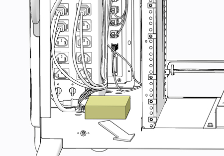

Operating Documentation
Direction 5193574-800, Rev# 22
Module Version 1.0, Version Date 10/15/13
Operating Documentation |
| ||||
| Potential for Shock | ||||
| Voltage may be present. | ||||
| Use proper lockout/tagout procedures before replacing components. See safety menu of Service MANUAL for appropriate procedures. |
| ||||
| Follow ALL required safety and PPE procedures customary for your organization when working on this product. | ||||
| Condition | Reference | Effectivity |
|---|---|---|
Only trained service personnel should service the GE Scanner. | - | - |
Select one of the following methods to Power OFF the Console:
If Applications are up, click on the [Shut Down] button on desktop display and select [Shutdown].
If Applications are down, open a Terminal Window. Type: halt , then press <Enter>.
When halt command has finished, power Off the console at the front panel switch.
Apply LOTO for console. For procedures, see Equipment Service - Lockout-Tagout-PPE.
Remove the console’s keyboard tabletop assembly and front console chassis cover.
Locate the network switch on the left side bottom of console chassis. The network switch is held in place with Velcro. Lift up on the network switch to detach it from the console base.
Illustration 2: Network Switch Removal

Disconnect all cables attached to the network switch. Make certain that all cables are properly labeled.
Illustration 3: Network Switch Connections

| Item | Description | Destination |
| 1 | Ethernet Port 1 | Host Computer (eth3 - System Board) |
| 2 | Ethernet Port 2 | Rear Bulkhead (AW) - J29 |
| 3 | Ethernet Port 3 | Rear Bulkhead (EKG) - J30 |
| 4 | Ethernet Port 4 | Rear Bulkhead (RPM) - J31 |
| 5 | Ethernet Port 5 | Rear Bulkhead (SRV) - Console Front Panel |
| 6 | Ethernet Port 6 | Not Used |
| 7 | Ethernet Port 7 | Not Used |
| 8 | Ethernet Port 8 | Not Used |
| 9 | Power Input | Console Power Distribution Box - J12 |
Reconnect all cables removed earlier from network switch.
Reattach the network switch to the base of the console.
Remove LOTO on console. For procedures, see Equipment Service - Lockout-Tagout-PPE.
Power On console.
Inspect network switch and confirm the Power and Port 1 LEDs are lit.
Install console’s keyboard tabletop assembly and front console chassis cover. Refer to Replacement → Console (GOC6.6) → Console Cover Removal and Installation Procedure.
Perform the Functional Checks → System Scanning Test instructions from the procedure list.